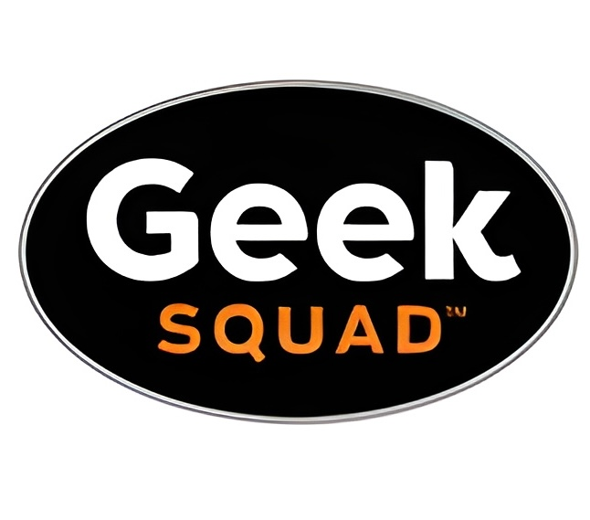

I currently study at the Leeds School of Business at the University of Colorado Boulder, exploring the world through Business Analytics. In the past, I've dived into data using math, models, and plenty of nifty software tools. Today, I'm blending my curiosity in philosophy, law, technology, and business—and tomorrow, I'm excited to use all I've learned to help companies make smarter, data-driven decisions.
Welcome to my digital home!

Alteryx: Earned the Alteryx Designer Core certification. Experienced with tools including multi-row calculations, data cleansing, transpose, cross tab, summarize, and join to clean and transform data.
Microsoft Excel: Regularly applied Excel in academic coursework, performing linear regressions, solving linear programming problems with Excel's Solver, and developing advanced Excel formulas. Leveraged Analytic Solver Platform for Excel and @RISK to run Monte Carlo simulations and build decision trees for probabilistic analysis and strategic decision-making.
DataRobot: Leveraged DataRobot to build, select, and validate predictive models, achieving 85% accuracy on a freshman retention prediction using a sample database. Evaluated and compared various machine learning algorithms to identify the most effective predictive approach.
Zapier: Developed and deployed automated workflows using Zapier to integrate web applications, including Salesforce, Airtable, Twilio, and Google Workspace. Streamlined data flows, improved efficiency, and reduced manual tasks by using cross-platform automation and real-time communication between tools.
Linear Programming: Formulated and solved complex linear programming problems from descriptions, incorporating integer programming techniques for discrete decision making. Additionally, analyzed and resolved network optimization problems, including shortest path, maximum flow, and two-sided assignment models.
Microsoft Access: Designed and maintained a relational database in Microsoft Access to manage data for an apartment complex, tracking information on units, renters, and owners. Built forms and queries to streamline data entry and support efficient record-keeping.
Oracle Live SQL: Wrote SQL queries using both DDL and DML to create, update, and manage databases. Extracted and manipulated data using aggregation, summarization, and filtering techniques, including GROUP BY and HAVING clauses.
Virtual Machines: Created and managed virtual machines using Parallels and VirtualBox on both Windows and Mac platforms. Comfortable working across operating systems, with extensive experience in Windows, Linux, and macOS environments.
Throughout college, I’ve taken a wide range of courses. The ones below are the most representative of my interests and strengths. They highlight the tools, concepts, and challenges I’ve most enjoyed working with and continue to build on.
Decision Analytics (MGMT4820): Solved complex linear programming problems and explored various optimization models, including integer programming, network models, shortest path, and maximum flow problems. Used Analytic Solver for Excel® to create simulations, decision trees, and sensitivity charts.
Customer Analytics (MKTG3050): Applied statistical techniques in R to analyze real-world customer data. Projects included perceptual mapping, K-means clustering, linear regressions, calculating customer lifetime value (CLV), and modeling customer retention.
Supply Chain Management (MGMT4110): Examined domestic and global supply chains, evaluating their effectiveness. Gained experience with forecasting, network modeling, conjoint analysis, breakeven analysis, and smoothing techniques.
Business Data Management (BAIM3205): Studied relational databases and DBMS fundamentals. Wrote SQL in Oracle Live SQL and implemented designs in Microsoft Access. Created a complete database for an apartment complex, including forms and reports.
Low Code for Citizen Developers (BAIM3210): Explored a variety of low-code platforms such as Salesforce, Zapier, Nintex Skuid, Airtable, Typeform, and Glide to develop apps and automate workflows.
Principles of Accounting II (BCOR2302): Learned key concepts in financial and managerial accounting, including GAAP, depreciation methods, and analysis of balance sheets, income statements, and cash flow statements.
Advanced Business Law (BSLW4120): Master’s-level course covering contract law, tort law, bankruptcy, agency relationships, and corporate structures in depth.
University of Colorado, Boulder, Boulder, Colorado August 2024 – Present
Teaching Assistant, Introduction to Information Management and Analytics
Responsible for grading assignments and providing one-on-one and in class support to students on topics related to data science fundamentals and cybersecurity. Assisted in clarifying key concepts, offering feedback on homework and quizzes, and ensuring students' understanding of the coursework.
Geek Squad inc., Boulder, Colorado May 2024 – September 2024
Advanced Repair Agent
Diagnosed and repaired complex technical issues on a variety of computers with precision and diligence, ensuring customer satisfaction. Became an Apple Certified Technician and performed technical repairs on iPhones. Provided personalized support to clients, ensuring timely solutions and high-quality service.
 Drone Photographer, Boulder, Colorado May 2023 – August 2023
Drone Photographer, Boulder, Colorado May 2023 – August 2023
Freelance Photographer
Obtained the FAA Part 107 license for commercial drone pilots and worked with building owners to streamline rooftop inspections. Also provided aerial photography for events and action sports, delivering high-quality visuals for client projects.
 Shake Shack inc., Boulder, Colorado June 2021 – August 2022
Shake Shack inc., Boulder, Colorado June 2021 – August 2022
Trainer
Coordinated customer orders, trained new employees, and addressed customer concerns to ensure smooth operations. Worked closely with team members to maintain a high standard of service, while resolving any issues efficiently to enhance the customer experience. Played a key role in onboarding new staff by teaching operational procedures, promoting teamwork, and fostering a positive work environment.
Timber Ridge Access Database: Planned a database for an apartment complex in Boulder with an ER diagram (using erdplus.com). Implemented the database via Microsoft Access. Used Oracle Live SQL to group data from the relational database in a way that would be helpful to the apartment complex, and implemented in the database using "Queries." Created forms as a user friendly way to add data into tables.
During this project, I learned the fundamentals of relational databases, from planning to implementation. I learned the syntax of SQL and how it can be used to group and extract data from a database. I was able to understand a business' needs and was able to ask the right questions to build this database properly.
Freshman Retention Rate Prediction Model: Using real world data on freshman retention rates, I used DataRobot to generate models that would predict the next year's retention rate. I created an Excel template that would determine revenue from a model, and was able to generate the most revenue in my class.
During this project, I learned to use Excel and Alteryx to format data in a manner optimized for AutoML. I learned how AutoML works, and how to use DataRobot to generate models and select the best one.
FiftyFifty: An Android app I programmed that has users click boxes with a 50% chance to lose and have to restart, and compete to get the highest score. Coded using Flutter with Dart and Android Studio. Learned basic structures Dart from Youtube and was able to dictate to WindSurf features to add to my app.
During this project, I learned how to program mobile apps with Flutter and Dart. I also learned how prompt engineering with WindSurf to make specific changes to my app.

The relational database hosted in Microsoft Access

The revenue template, comparing models from DataRobot